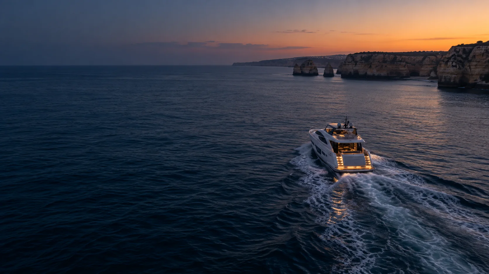
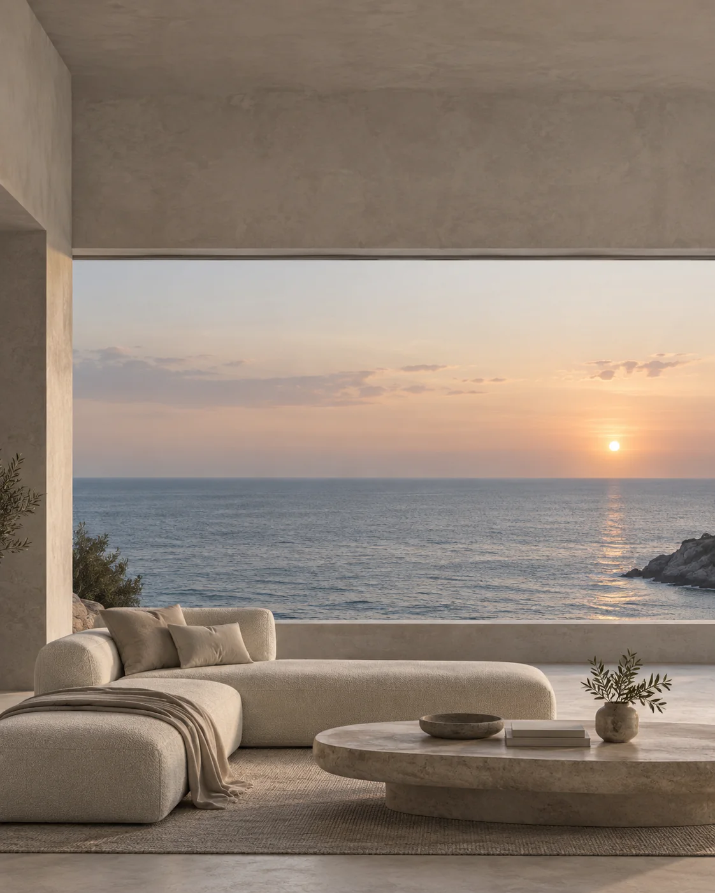

Direção exteriorConceito / referência
Refit interior, mobiliário à medida, materiais e coordenação completa — pensados para a forma como queres viver a bordo.
Uma seleção visual da direção de refit, detalhe e interiores que estamos a desenvolver para a PAPOA Yachts.
Imagens conceptuais e de referência — não são projetos concluídos pela PAPOA.




Juntamos conceito, visualização 3D, desenvolvimento técnico e parceiros especializados para transformar yachts existentes sem destruir aquilo que já funciona.
Falar sobre o yacht →Transformações completas ou parciais de salões, cabines e zonas sociais.
→Carpintaria, arrumação e peças feitas para utilização marítima.
→Peles, tecidos e espumas escolhidos para conforto e durabilidade.
→Luz ambiente e funcional integrada no conceito do interior.
→Visualização e desenvolvimento antes de começar a produção.
→Coordenação de fornecedores, produção, instalação e acabamento final.
→Uma direção interior mais quente, confortável e contemporânea para uma plataforma já comprovada.
Falar connosco →Um bom refit não precisa de apagar a identidade do barco. Focamo-nos nas alterações que criam maior impacto no conforto, ambiente e qualidade percebida.